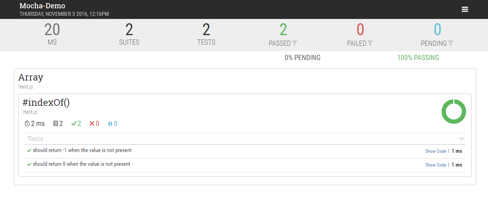
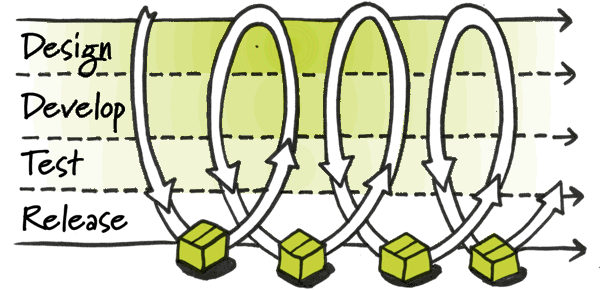

Mocha is a feature-rich JavaScript test framework running on Node.js and in the browser, making asynchronous testing simple and fun. Mocha tests run serially, allowing for flexible and accurate reporting, while mapping uncaught exceptions to the correct test cases.
安装
全局安装:
项目目录下安装
断言
Mocha允许使用任何断言库，而在Node中有Assertion Testing这样一个模块，可以直接用来使用，同时以下库也可:
chai.js —— expert(),assert()和should风格的断言
should.js——BDD
better-assert.js ——C风格的assert()
expect.js ——expect()
unexpected.js ——BDD
以chai的expect风格断言为例:
异步代码测试
如何让Mocha知道异步代码已经结束呢?毕竟我们无法判断何时会调用回调函数
只需传递it()一个参数done即可，这样Mocha就知道他会等待这个函数被调用然后结束测试
关于箭头函数
由于箭头函数内部this指向的改变，所以会导致Mocha代码无法指向Mocha上下文，故不建议在箭头函数中使用Mocha
测试脚本书写
通常，脚本与所要测试的源码脚本同名，但是后缀名为.test.js(测试)或.spec.js(规格)
|
|
测试脚本中应该包含一个或多个describe块(test suite测试套件)，而每一个describe块应包含一个或多个it块(test case，测试用例)
指令及基本用法
--recursive
Mocha默认运行test目录下的测试脚本，但是若文件放在test目录的下一级目录下，则执行$ mocha则无法检测，需要加参数 --recursive--reporter -R
Mocha默认报告格式为spec格式
|
|
另外，使用mochawesome模块可以生成HTML格式报告

如何安装使用mochawesome?
|
|
--watch -W
实时监视测试脚本，只要发生变化就会自动运行Mocha
--bail -b
指定只要有一个测试用例未通过就停止执行后面的测试用例，方便进行持续集成

持续集成图示(图源自网络)--grep -g
用于搜索测试用例的名称(即it块的第一个参数)，然后只执行该测试用例
--invert -i
只运行不符合条件的测试用例，必须配合--grep使用
配置文件mocha.opts
可以将参数及测试目录写在该配置文件中:
之后执行$ mocha就相当于执行: